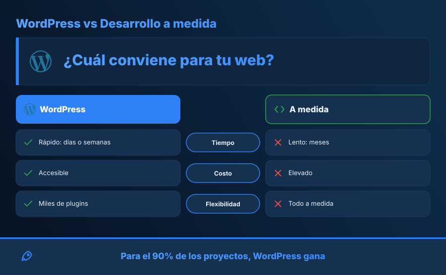
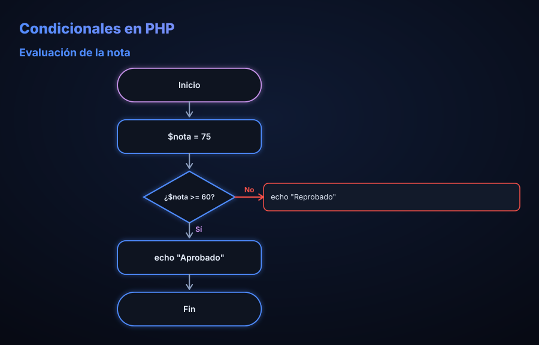
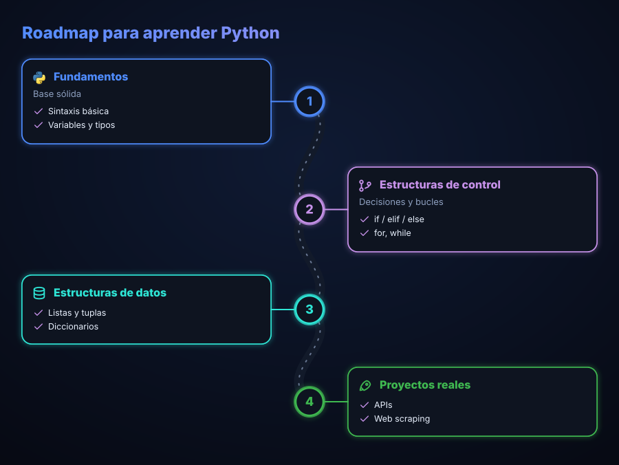
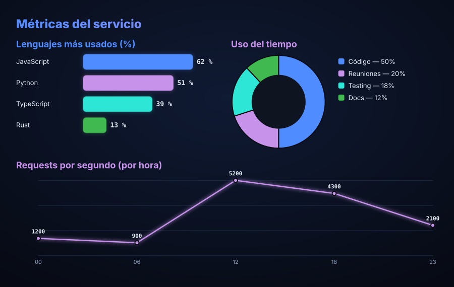
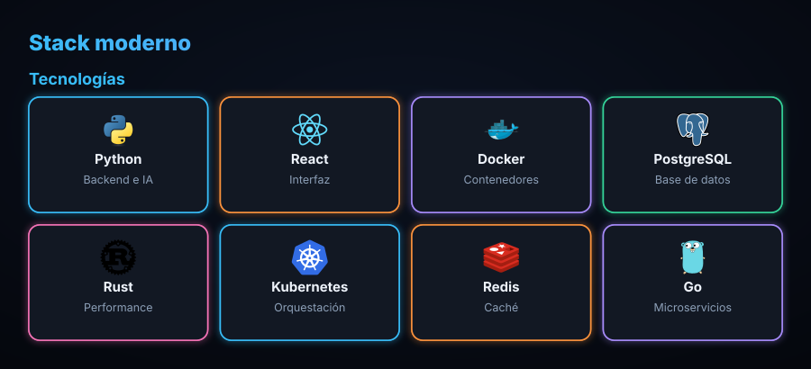
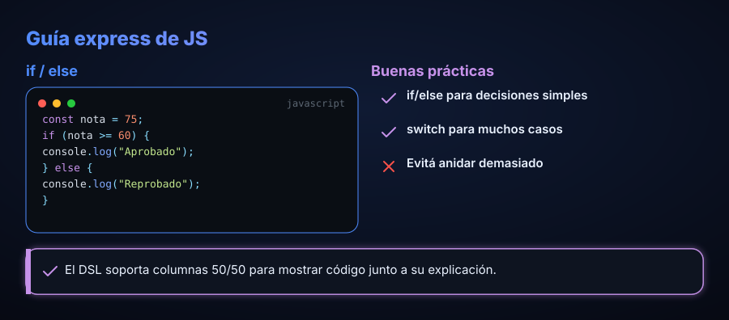

Comparativa “versus”

Ver DSL
section versus
left WordPress
right A medida
- label Tiempo
l Rápido
r Lento
ltone pro
rtone conGenerá comparativas, flowcharts, roadmaps, charts y grids de logos desde un documento JSON o un DSL de texto. Vos escribís los datos, infoglitch dibuja el SVG. La IA es opcional.
Corre 100% en tu navegador con @infoglitch/core self-hosted (sin CDN). El parser es tolerante: se dibuja mientras escribís.
Tip: cada section <tipo> agrega un bloque. Probá cambiar el tema arriba.
Un documento es una lista de secciones. infoglitch las apila y renderiza a SVG. Si querés, un adapter de IA convierte un prompt en ese mismo documento.
@infoglitch/export.import { renderToString } from "@infoglitch/core"; const svg = renderToString({ template: "stack", theme: "neon-night", sections: [ { type: "title", text: "CI/CD", icon: "rocket" }, { type: "steps", items: [ { label: "Build" }, { label: "Deploy" }, ]}, ], });
const svg = renderToString(`template stack theme neon-night section title text CI/CD icon rocket section steps - label Build - label Deploy`);
import { Infographic } from "@infoglitch/react"; <Infographic doc={doc} width={960} /> <Infographic source={dsl} />
import { createAdapter, generateInfographic } from "@infoglitch/ai"; const adapter = createAdapter("anthropic"); const { doc, svg } = await generateInfographic( adapter, { prompt: "Pipeline de CI/CD" });
import { downloadPng, downloadPdf } from "@infoglitch/export"; await downloadPng(svg, "infografia.png"); await downloadPdf(svg, "infografia.pdf");
import { registerSimpleIcons, registerDevicon } from "@infoglitch/icons"; registerSimpleIcons(); // ~110 mono await registerDevicon(); // ~90 a color
Todas estas imágenes son SVG generados por infoglitch. Abrí “Ver DSL” para ver las pocas líneas que las producen.

section versus
left WordPress
right A medida
- label Tiempo
l Rápido
r Lento
ltone pro
rtone con
section flow
- start Inicio
- decision ¿nota >= 60?
branch Reprobado
- process Aprobado
- end Fin
section roadmap
- label Fundamentos
icon python
point Sintaxis
- label Proyectos
icon rocket
point APIs
section chart
chart bar
unit %
- label JavaScript
value 62
- label Python
value 51
section iconGrid
columns 4
- icon python
label Python
- icon react
label React
section columns
ratio 1 1
col
section codeSnippet
language javascript
code const x = 1;
col
section list
- label Tip
tone proMás footer opcional. columns coloca secciones lado a lado (ej. 50/50).
Fondo con gradiente, glow neón, acento por sección, título con degradé y paleta de código.
| Paquete | Para qué |
|---|---|
@infoglitch/core | Modelo + DSL + renderer SVG. 16 tipos, 6 temas, charts, highlighting, columnas. JSON → SVG sin IA. |
@infoglitch/ai | Multi-proveedor: Anthropic, OpenAI, OpenRouter, Gemini. |
@infoglitch/react | Componente <Infographic/> + hook de streaming. |
@infoglitch/export | PNG / PDF / SVG en el navegador, sin dependencias. |
@infoglitch/icons | Simple Icons (~110 / ~3470) + Devicon a color (~90). |
@infoglitch/fonts | Inter + JetBrains Mono embebibles para output consistente. |